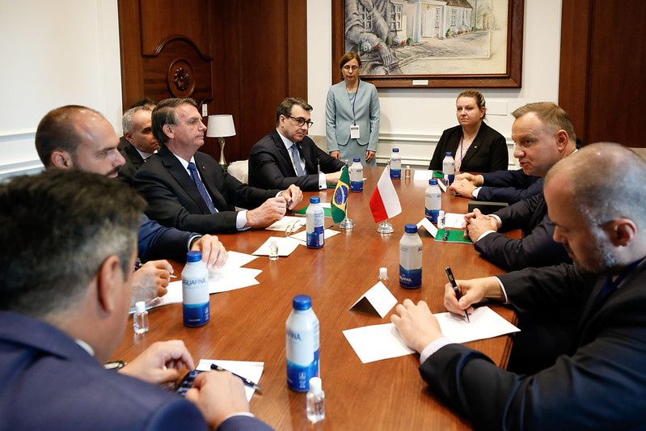
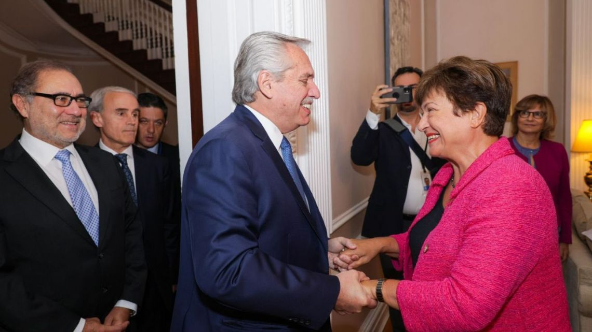
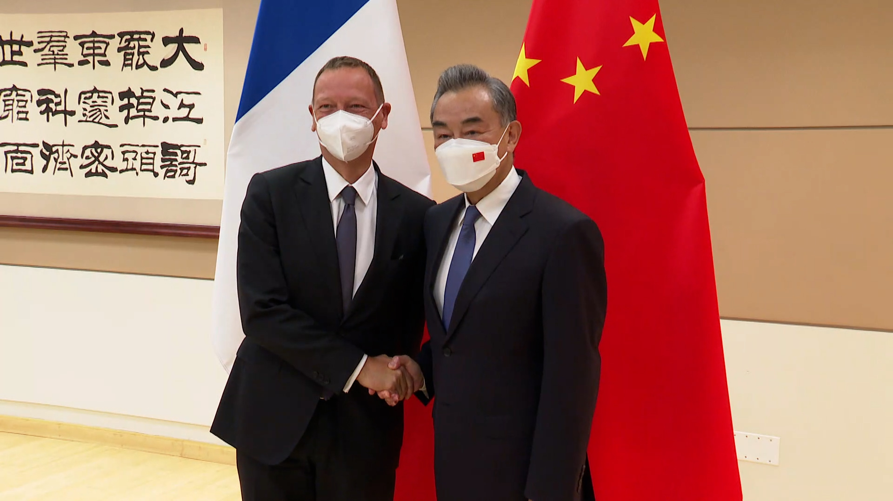
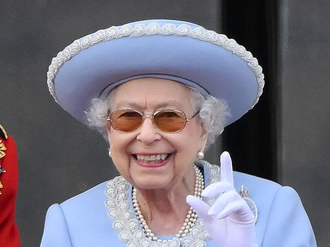

Bangladseh News
চ্যাম্পিয়ন মেয়েরা হবে ‘ট্যাবু ভাঙার সাহস
সাফে ইতিহাস গড়ে বীরবেশে দেশে ফেরা মেয়েদের অর্জনকে নারীদের ঘিরে থাকা কাচের দেয়াল ভাঙার অনুপ্রেরণা হিসেবে দেখছেন দেশের কীর্তিমান নারীরা।

নারী ফুটবলে দক্ষিণ এশিয়ার শ্রেষ্ঠত্বের মুকুট জয় করে নেপাল থেকে দেশে ফেরা সাবিনা খাতুন আর তার দল যখন ছাদ খোলা বাসে ট্রফি হাতে দাঁড়িয়ে অভিনন্দন আর শুভেচ্ছার স্রোতে ভাসতে ভাসতে বাফুফের দিকে যাচ্ছিলেন, তখনও ফেইসবুকে কেউ কেউ প্রশ্ন তুলছিলেন খেলার মাঠের পোশাক নিয়ে, মেয়েদের এসব খেলায় ধর্মনাশের কষ্টের কথাও কারও কারও পোস্টে আসছিল।
এমন অনেক তীর্যক মন্তব্য, অশালীন বাক্যবাণ আর সামাজিক পুলিশের বাধা পেরিয়েই দেশকে শিরোপার গৌরব এনে দিতে পেরেছেন কলসিন্দুরের মারিয়া, শিউলি আর রাঙামাটির ঋতুপর্ণারা। কাঠমান্ডুতে ফাইনালের আগে ফেইসবুকে সে কথাই লিখেছিলেন সানজিদা আখতার।

তিনি বলেছিলেন, “যারা আমাদের এই স্বপ্নকে আলিঙ্গন করতে উৎসুক হয়ে আছেন, সেই সকল স্বপ্নসারথিদের জন্য এটি আমরা জিততে চাই। নিরঙ্কুশ সমর্থণের প্রতিদান আমরা দিতে চাই। ছাদখোলা চ্যাম্পিয়ন বাসে ট্রফি নিয়ে না দাঁড়ালেও চলবে, সমাজের টিপ্পনী কে একপাশে রেখে যে মানুষগুলো আমাদের সবুজ ঘাস ছোঁয়াতে সাহায্য করেছে, তাদের জন্য এটি জিততে চাই।
“আমাদের এই সাফল্য হয়তো আরো নতুন কিছু সাবিনা, কৃষ্ণা, মারিয়া পেতে সাহায্য করবে।
Brazilian News
To share this content, please use the link https://brazilian.report/liveblog/2022/09/20/bolsonaro-un-new-york-ecuador-and-poland/ or the tools offered on the page.

To share this content, please use the link https://brazilian.report/liveblog/politics-insider/ or the tools offered on the page.
Argentinian News
Doing well IMF chief Kristalina Georgieva backs Argentina's course in meeting with President Alberto Fernández
IMF Managing Director Kristalina Georgieva briefs media on “excellent” meeting with President Alberto Fernández; Reiterates praise for Economy Minister Sergio Massa, declaring: “Three ministers, one programme

P
resident Alberto Fernández left the hotel where he is staying in New York at 12.17pm Buenos Aires time and within minutes, he was meeting with International Monetary Fund (IMF) Managing Director Kristalina Georgieva.
The third face-to-face meeting between the head of state and the head of the multilateral lender lasted 45 minutes and took place just hours after IMF staff announced the approval of a second review of an agreement that will allow Argentina’s government to gain access to US$3.9 billion in funds.
"Thank you very much for giving me the opportunity to share with you that we had an excellent meeting with President Fernandez,” Georgieva told Perfil and other Argentine media outlets who are covering the Peronist leader’s tour of the United States.
“We talked about the considerable progress we have made in reaching an agreement at the technical level on the second review. And I also expressed my appreciation for the very serious way in which Minister Sergio Massa and his team including the Central Bank are addressing Argentina's significant challenges,” said the IMF chief.
Argentina's second-quarter economic growth surpasses expectations
Read more...
Argentina's second-quarter economic growth surpasses expectations
This was the first time that Georgieva and Fernandez had met since last October, when they met in Rome. On that day, Argentina’s economy minister was Martín Guzmán. Since that date, he has left, Silvina Batakis became head of the portfolio for 25 days and Sergio Massa has joined the Cabinet – a fact that the head of the IMF herself celebrated.
"Who occupies the functions of government is a sovereign decision of each country, the important thing is to work together. Guzmán's departure was unexpected, we worked very well, but it was also very good to be able to meet with Batakis and it was a pleasure to see her again in Washington when she came with Massa, who also signals continuity,” Georgieva told reporters on Monday, speaking during her first press conference with Argentine media.
“What we discussed with each minister is how to fight inflation – there have been no fundamental changes”, said the IMF chief. “What we could see is an increase in the terms of authority and we must also highlight the strong team in pursuit of the common goal, the goal remains the fight against inflation and it matters to us that Argentina can be put on a solid footing for the benefit of the people
Argentina's government intervenes after country runs out of World Cup stickers
Read more...
Argentina's government intervenes after country runs out of World Cup stickers
At the end of the press conference, she stressed this line of thought once again "Three ministers, one programme."
Jorge Argüello, Argentina’s Ambassador to the United States, said that when Monday’s meeting began, Georgieva told the head of state: "President, we are doing well, things are working."
The diplomatic envoy, asked for his view, said that "the meeting was very positive.”
President Alberto Fernández warns world leaders of political violence threat in United Nations speech
Read more...
President Alberto Fernández warns world leaders of political violence threat in United Nations speech
Quizzed about the government’s economic course, Georgieva said that “the signs of the government's seriousness are precisely the stabilisation that the Argentine economy has experienced and also the progress in rebuilding reserves, as well as the reconstruction to deal with inflation, and especially to focus on the deficit and the reduction of energy subsidies."
In another part of the conference, the IMF chief described subsidies – always a hot topic in Argentina – as "harmful.”
Underlining her conviction in the government’s plan, Georgieva assured that Argentina’s plan "is a government programme and Massa proves that the government is the owner of the programme and the IMF technical team is there to support it.”
No revision
On the possibility of revising the goals of the initial agreement, Argüello was blunt, saying simply “a revision is not on the agenda.”
China News
Chinese Foreign Minister Wang Yi meets with French President's Diplomatic Advisor Emmanuel Bonne

Chinese State Councilor and Foreign Minister Wang Yi met with French President's Diplomatic Advisor Emmanuel Bonne on the sidelines of the 77th session of the United Nations General Assembly (UNGA 77)in New York on September 21.
Bonne introduced the views expressed by President Macron on the Ukraine crisis in his speech at the general debate of the UN General Assembly. Macron said that the France attaches great importance to the security, stability and restoration of peace in Europe, and is willing to maintain high-level exchanges with the China, strengthen communication and coordination, and work together to end the war. promote peace.
Wang Yi said that China appreciates President Macron once again speaks out against a new "Cold War", the confrontation between camps and groups, and the division of the world.
China stands for safeguarding the sovereignty and territorial integrity of all countries and abiding by the purposes and principles of the UN Charter. Both China and France are committed to peace and hope to end the conflict as soon as possible through peace talks. In the face of the current crisis, it is necessary for us to speak out in unison and demonstrate our responsibility as a major power as a permanent member of the UN Security Council.
Australian News
Australia falls silent in solemn tribute to Queen Elizabeth II

Politicians and leaders gathered in Canberra to farewell Queen Elizabeth II in a memorial service, two weeks after her death.
The nation was granted a one-off public holiday on Thursday to officially mourn Britain’s longest-serving monarch, just a day after Prime Minister Anthony Albanese and Governor-General David Hurley returned from the Queen’s funeral in London.
Mr Albanese said the day would “allow people to pay their respects for the passing of Queen Elizabeth”.